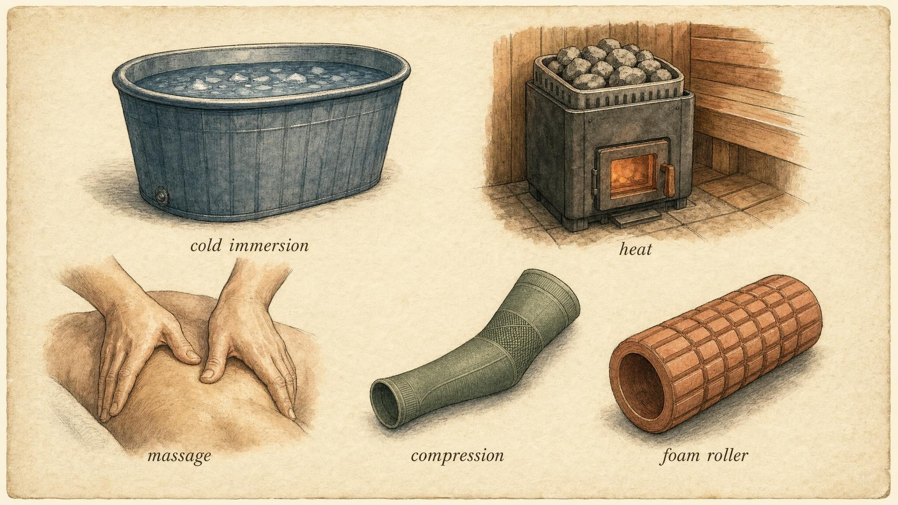
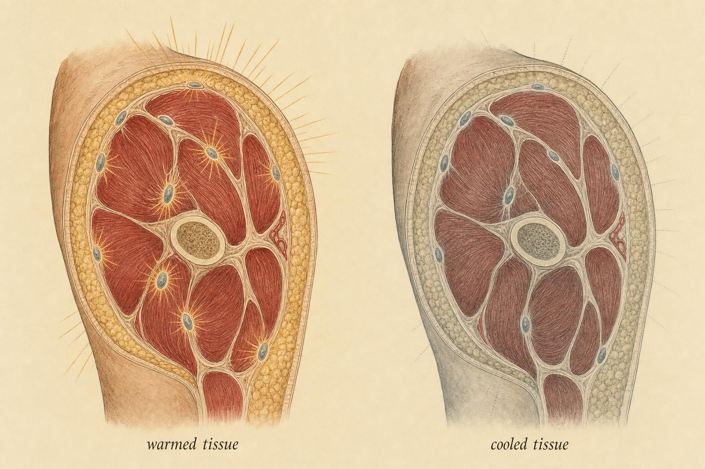

Ice, Heat, and Honest Grades
Grading the recovery toolkit against the adaptation model, and confronting the moments when feeling better and adapting better point in opposite directions.
Soraya keeps a chest freezer in her garage, retrofitted with an aquarium chiller so the water sits at a flat 11 degrees Celsius year round, and for two competitive seasons it has been the last stop of every hard training night. She is 34, a masters-division powerlifter chasing a total she has circled for three cycles, and her ritual never varies. Ninety seconds after the final working set, sleeves off, straight in to the chest. She climbs out feeling, in her own words, hosed down and reset. Her legs stop humming. Sleep arrives faster. Judged by the only instrument she has ever used to grade a recovery tool, namely how she feels twenty minutes later, the tub earns its keep every single night.
Then, midway through an off-season hypertrophy block, a training partner sends her a study, and the study describes her exact ritual doing something she never expected. It is not doing nothing. It is quietly turning down the volume on the biological signal her training sessions exist to provoke.
This is the chapter the course has been building toward every time it promised to grade the recovery toolkit honestly rather than affectionately. Chapters 1 through 5 built the adaptation model: hard training is a stimulus, soreness and post-exercise stress are message traffic rather than damage to be erased, and real progress depends on the body reading that traffic correctly. Now we point that model, without flinching, at the tools people reach for afterward: cold water immersion, heat and sauna bathing, massage and foam rolling, and compression garments. Some of these will earn a strong grade. One of them, in one specific and well-documented context, is about to force the most uncomfortable and most useful lesson in the entire course, the same lesson Soraya is about to learn from her training partner's study.
Every modality in this chapter gets judged the same way, against the same four questions, whether it is a forty-dollar foam roller or a chest freezer wired to an aquarium chiller. That consistency is the entire point. The recovery industry survives on inconsistent grading, on letting a product's price tag or its popularity substitute for its evidence. This chapter refuses that substitution, and by the end of it you should be able to look at any recovery claim and ask the same four questions Soraya's training partner asked about her tub.
The rubric, stated out loud
Honest grading requires a rubric stated out loud and applied identically to every modality, because vague enthusiasm ("it helps recovery") is how weak evidence gets laundered into a confident product claim. Here is the four-question rubric this chapter will not deviate from, no matter how popular or expensive the modality under review.
First: what does the modality actually do, mechanistically and physiologically, once the marketing copy is stripped away? Second: how strong is the evidence, meaning are we looking at a meta-analysis pooling dozens of trials, or a single small study run once on a convenience sample of undergraduates? Third: does the modality improve perceived recovery (how a person feels), real adaptation (the training response the session was designed to produce), or both, because Chapter 4 already established that these are not the same variable and can move in opposite directions. Fourth, and this is the question almost nobody in the fitness industry asks out loud: does the modality ever interfere with the very adaptation a person trained to provoke?
That fourth question is what separates a rubric from a listicle. A modality that does nothing beyond costing fifteen minutes is a minor inconvenience. A modality that feels wonderful while quietly subtracting from the training response underneath it is a genuine trap, and the trap is only visible if perceived recovery and real adaptation get tracked in two separate columns rather than blended into one fuzzy sense of "recovery."
A note on lanes
Everything in this chapter is a recovery-and-adaptation question, not a therapeutic one, and that boundary matters enough to state plainly before going further. When this chapter discusses cold water and inflammation, it is discussing the adaptive inflammatory signaling that follows an ordinary hard training session, the kind that produces next-day soreness and eventually a stronger tissue. It is not discussing injury management. Pain that is sharp, that is localized to a joint rather than spread through a muscle belly, or that persists well beyond the usual one- to three-day soreness window is not a recovery-modality problem to be iced, heated, or rolled away. It is a signal that warrants evaluation by someone qualified to make that call.
Keep that line bright as the chapter proceeds through five modalities and one athlete's two-season experiment on herself. Everything that follows assumes ordinary training stress in a person without an injury or a medical condition that changes the calculus. The moment either of those assumptions breaks, this chapter's rubric stops applying and a different kind of expertise takes over.

The toolkit, laid out for grading, each specimen judged against the same rubric." data-image-idx="0" style="display:block;max-width:100%;max-height:75vh;height:auto;width:auto;margin:0 auto;cursor:pointer;">Cold water immersion: the signature paradox
We start with the modality that makes the whole course cohere. Sitting in water cooled to roughly 10 to 15 degrees Celsius for somewhere between six and fifteen minutes after training, cold water immersion (CWI) is one of the most beloved recovery rituals in sport, embraced by everyone from recreational lifters like Soraya to national teams with full sports-science staffs. On the perceived-recovery axis, that popularity is earned. According to Dupuy and colleagues (2018), whose meta-analysis pooled ninety-nine studies on post-exercise recovery techniques, immersion produced small-to-large reductions in delayed onset muscle soreness (DOMS) compared with passive rest. People who use cold water genuinely feel less beaten up the next day. That effect is real, it is measured honestly across a large evidence base, and nothing in this chapter is trying to take it away from anyone who values it.
Then comes the fourth rubric question, the one about interference, and this is where cold water immersion becomes the case study the rest of the chapter keeps returning to. According to Roberts and colleagues (2015), a twelve-week randomized controlled trial (RCT) assigned resistance-trained men to perform either cold water immersion or active recovery after every training session across the full block. The active-recovery group came out the other side with significantly more muscle mass and more strength than the group that iced. The more striking part of the finding sat one layer beneath the tape-measure results: cold water immersion blunted satellite cell activation, the process by which muscle recruits new nuclei to support growth, and attenuated signaling through the mechanistic target of rapamycin (mTOR) pathway, one of the primary molecular routes by which resistance training tells muscle to get bigger, for up to forty-eight hours after each session. The cold was not simply failing to help. It was reaching into the molecular machinery that builds muscle and turning the volume down, session after session, for twelve straight weeks.
Why would cooling tissue do that? The leading explanation returns to the framing this course has used since Chapter 1: the acute inflammatory and cell-signaling response that follows a hard resistance-training session is not damage to be mopped up. It is message traffic. It is how a muscle fiber learns that it was overloaded past its current capacity and needs to rebuild itself larger and more resilient. Aggressively cooling the tissue within minutes of that overload dampens the traffic before the message finishes sending. According to Fuchs and colleagues (2019), who used stable-isotope tracers to follow amino acids directly into muscle tissue, post-exercise leg cooling lowered rates of myofibrillar protein synthesis, the process of actually building new contractile muscle protein, and reduced how much of the protein eaten after training made it into muscle, even when the athletes in the study ate an amount of protein ordinarily considered fully adequate for maximizing that response. Sit with that finding for a moment, because it is the detail that should unsettle a habitual ice user more than any headline number. You cannot simply out-eat the cold. The cooling degraded how efficiently the muscle used the protein it was correctly and adequately given.
Post-exercise cold water immersion attenuates acute anabolic signalling and long-term adaptations in muscle to strength training.
Roberts et al. (2015), title of the landmark trial
Now for the nuance that keeps this from collapsing into blanket dogma, because honest grading means resisting the pull toward a simpler, scarier story than the data actually support. According to Fyfe and colleagues (2019), seven weeks of whole-body resistance training paired with post-session cold water immersion produced attenuated growth in type II muscle fiber cross-sectional area (CSA), the fast-twitch fibers most responsible for visible size gains, but strength gains, measured as one-repetition maximum (1RM) in the leg press, came out similar between the cold water group and the control group. The interference shows up more reliably for hypertrophy than for maximal strength, and a person training purely for a strength total might reasonably weigh that difference more lightly than a person training purely for size.
According to Piñero and colleagues (2024), an eight-study Bayesian meta-analysis put a number on the hypertrophy question specifically: a 95.7 percent posterior probability that post-resistance-training cold water immersion blunts muscle growth, with a pooled standardized effect near negative 0.22. Translated out of statistics, that is a small-to-moderate negative effect held with high confidence in its direction. This is not one alarming study standing alone. It is a converging body of evidence, run by different labs using different protocols, arriving at the same conclusion from different angles. Crucially, and this is the detail that keeps the finding from becoming a blanket warning against all cold water everywhere, that same meta-analysis found negligible effects of cold water immersion on endurance-type adaptations. This is the hinge of honest grading in this entire chapter: the interference is training-mode specific. Cold water after a hypertrophy-focused strength session is a fundamentally different proposition from cold water after an interval run or a long ride. The molecular pathway carrying the hypertrophy signal, the one cooling appears to suppress, is comparatively distinct from the pathways underlying endurance adaptation.
Part of what makes cold water immersion hard to grade with a single letter is how much the protocols vary from study to study, and the practical read matters as much as the mechanistic one. Water temperature across this literature ranges from a relatively mild 15 degrees Celsius down to a genuinely harsh 5 degrees, exposure time ranges from five minutes to twenty, and some protocols call for full immersion to the neck while others submerge only the legs. None of the trials cited here used identical dosing, which is one reason effect sizes vary even when the direction of the effect agrees across studies. What stays consistent across that variation is the direction: colder and longer immersion, applied habitually right after strength training, trends toward a larger interference effect, while brief, occasional exposure trends toward a smaller one. Dose matters, and a rubric that only asks whether cold water works, without asking how cold, how long, how often, and after what kind of session, is not asking a complete question.
When Soraya read the Roberts and Piñero findings, her first reaction was defensive, and it is worth naming that reaction because most people have it. The tub feels incredible. Feeling incredible is real. But feeling incredible was never in dispute anywhere in this chapter, and it was never the variable her hypertrophy block actually depended on. Her total depends on whether her muscle fibers get bigger and stronger across a block that is, by design, built around maximizing exactly that molecular signal, night after night, for months. A ritual that reliably feels restorative while quietly discounting the very outcome the block exists to produce is not a minor inefficiency. It was working against its own user's stated goal for two full seasons before anyone told her so.
Grade. For soreness and short-term perceived readiness: strong evidence, clearly positive. For long-term hypertrophy when used habitually after strength sessions: strong evidence, clearly negative. For maximal strength: neutral-to-mild interference, weaker than the hypertrophy effect. For endurance adaptation: negligible interference. There is no single letter grade for cold water immersion that would not be dishonest by omission, and refusing to hand out that single letter grade is exactly the discipline this chapter exists to model.
Heat and sauna: a slower, quieter story
If cold suppresses adaptive signaling, does heat amplify it? The symmetry is tempting, tidy, and exactly the kind of tidy story a recovery marketer would love to sell. The actual evidence is more modest than the enthusiasm, and considerably more interesting once you stop expecting a clean mirror image of the cold water story. According to Ahokas and colleagues (2025), a systematic review conducted under Preferred Reporting Items for Systematic Reviews and Meta-Analyses (PRISMA) guidelines and covering post-exercise whole-body heat exposure, meaning sauna bathing and hot water immersion at 36 degrees Celsius or above, acute recovery effects from a single heat exposure are genuinely unclear, though some measures of perceived recovery improved immediately after exposure. What held up more durably across the reviewed literature was a different finding: regular, repeated heat exposure may improve endurance performance through heat-acclimation mechanisms, including expanded blood plasma volume, improved thermoregulatory efficiency, and cardiovascular adaptations that carry over into exercise performed in hot conditions.
Notice how that finding reframes heat entirely. It is less a recovery modality, in the sense of something that speeds up bouncing back from yesterday's session, and more a training stimulus in its own right, a deliberate way of provoking heat-acclimation adaptations that happen to be useful for someone who will compete or train in warm conditions. That is a meaningful distinction under this chapter's rubric, because it changes the question a person should be asking about a sauna session. The question is not "will this help me recover faster from today's workout." The better question is "am I trying to build heat tolerance for a future event, and am I willing to treat sauna time as its own dedicated stimulus rather than an add-on."
Mechanistically, the case for heat as a stimulus rather than a rescue leans on a few plausible pathways, though it is worth being honest that this piece of the literature is thinner than the cold water body of work. Heat exposure activates heat shock proteins, a family of molecules that help stabilize and refold cellular proteins under thermal stress, and some laboratory work suggests these proteins interact with pathways involved in mitochondrial biogenesis, the process by which cells build more of their energy-producing machinery. Whether that cellular story translates cleanly into meaningful strength or hypertrophy gains in trained humans is, per Ahokas and colleagues, simply not yet established with confidence. The review explicitly flagged that effects on strength and power adaptation remain understudied, which means the honest answer to whether sauna use helps build muscle is that the trials needed to answer that question with confidence largely do not exist yet. Saying "we do not know yet" is itself a form of honest grading, and it is a sentence the recovery industry uses far too rarely.
Grade. As an acute recovery tool for the day after a hard session: weak, unclear evidence, closer to Ahokas and colleagues' own wording than to any marketing claim. As a repeated stimulus for endurance-oriented heat acclimation, deliberately programmed across weeks rather than used once: moderate and genuinely promising. There is no evidence in the reviewed literature that heat interferes with adaptation the way cold water can, and there is a plausible, if still developing, mechanism by which repeated heat exposure adds a training effect of its own. Just do not expect a twenty-minute sauna session to rescue a session the way a supplement label implies it will.

Conceptual contrast: adaptive signalling running warm versus damped by cooling. Schematic, not to scale." data-image-idx="1" style="display:block;max-width:100%;max-height:75vh;height:auto;width:auto;margin:0 auto;cursor:pointer;">Massage: the perceived-recovery champion
Here is a modality that grades well precisely because it stays honestly inside one column instead of overreaching into a second one it cannot support. According to Dupuy and colleagues (2018), whose ninety-nine-study meta-analysis remains the broadest evidence base in this chapter, massage was the single most powerful technique among all the modalities they compared for reducing delayed onset muscle soreness and perceived fatigue, outperforming immersion, compression, and contrast therapy on those specific outcomes.
What massage does not have, and does not need to have to be worth a person's time, is a credible mechanism for directly accelerating the structural rebuilding of muscle tissue. The mechanisms behind its soreness relief lean toward the neural and the perceptual rather than the molecular: modulation of pain signaling at the level of the spinal cord and brain, a parasympathetic shift that lowers overall physiological arousal, and the genuinely non-trivial value of a ritual that gives a person a dedicated, unhurried window to lower their guard after a stressful session. None of that shows up in a laboratory assay of muscle protein synthesis, and none of it needs to, because the outcome massage is being graded on here is how a person feels and how ready they report being, not whether their fibers grew a measurable amount more.
Under this chapter's rubric, massage produces a clean profile: strong evidence, strongly positive on perceived recovery, neutral on structural adaptation, and no signal anywhere in the literature of interference with the training response. A modality that reliably makes hard training feel more sustainable, without costing anything on the adaptation side of the ledger, is a genuinely good modality, provided it gets graded for exactly what it is rather than inflated by marketing into something it was never shown to be, namely a shortcut to faster muscle repair.
There is a practical caveat worth naming plainly. Massage, like every modality in this chapter, sits downstream of the boundary drawn earlier between recovery and treatment. Deep-tissue work applied to an area of genuine injury, active inflammation from a joint problem, or a nerve impingement is a different intervention entirely, delivered for a different reason, and it falls outside what this chapter is qualified to grade. What is being graded here is ordinary post-training massage aimed at garden-variety muscle soreness, nothing more specialized than that.
Grade. Best-in-class for perceived recovery and reduction of soreness among every modality reviewed here; neutral on structural adaptation; no interference. If a person's recovery budget, meaning available time and money, is limited, massage buys real, well-documented subjective relief without an adaptive downside, which is a genuinely rare combination in this toolkit.
Compression: equivocal, but safe
Compression garments have accumulated an enormous and sprawling literature, more than any other single modality in this chapter, which makes them a useful lesson in how volume of research and clarity of conclusion are not the same thing. According to Weakley and colleagues (2021), a scoping review that swept up 183 studies spanning performance, biomechanical, neuromuscular, cardiovascular, muscle-damage, thermoregulatory, and perceptual outcomes, the honest headline is one of ambiguity rather than triumph: the evidence for compression improving performance is equivocal. Compression garments reliably raise localized skin temperature and may modestly reduce perceived muscle soreness, but rating of perceived exertion (RPE), the standard scale athletes use to report how hard an effort feels during exercise, is likely unchanged by wearing them.
The most useful sentence in that review, for the purposes of this chapter's rubric, is built from an absence rather than a presence: no evidence of negative effects on adaptation. That single negative finding, in the statistical sense of finding nothing, is what elevates compression from unproven to defensible. Compression is the lowest-stakes entry in the entire toolkit. It may nudge perceived soreness modestly downward, it will not interfere with the training response in any way the current literature has detected, and it can be worn passively for hours, across a flight, a long drive, or an ordinary workday, without disrupting anything else a person is doing. That combination makes it a reasonable convenience, particularly for travel and long recovery windows between competitions, rather than a genuine difference-maker in a training plan.
It is worth being explicit about what compression is not, since marketing for these garments frequently implies more than the data support. Claims that compression garments meaningfully flush lactate, prevent clot formation in healthy exercising adults, or accelerate tissue repair beyond a mild perceptual effect outrun what Weakley and colleagues' 183 studies actually established. The garments do something small and real on the perceptual side. They do not appear to do the more dramatic physiological things the product copy sometimes implies.
Grade. A large but equivocal evidence base; a small positive effect on perceived soreness; neutral effects on adaptation and on-field performance; no interference with the training response. Compression lands as neutral-to-mildly-useful, and importantly, harmless, which after the cold water immersion findings is not a trivial thing to be able to say about a recovery product.
Foam rolling: better warm-up than recovery
Foam rolling is the modality most oversold relative to what has actually been measured. According to Wiewelhove and colleagues (2019), a meta-analysis of twenty-one studies covering 454 participants, foam rolling's effects on performance and recovery are, in the review's own words, "rather minor and partly negligible." Its effect on recovery of strength specifically was small, a Hedges' g of 0.27, an effect size that in practical terms means a person would need to look carefully to notice it at all. Foam rolling can modestly reduce the sensation of muscle pain and can improve short-term flexibility, and, tellingly, the evidence supporting it as a warm-up tool, used before training to transiently improve sprint performance and range of motion, is stronger than the evidence supporting it as a recovery tool, used after training to speed up bouncing back.
That is a genuinely clarifying reframe, and it is worth pausing on why. The mechanisms proposed for foam rolling, autogenic inhibition through the Golgi tendon organs, transient changes in the viscoelastic properties of fascia, or simple gate-control modulation of pain perception at the spinal cord, are all plausible explanations for a short-lived change in how a muscle feels and moves in the minutes immediately following the rolling. None of them describe a durable mechanism by which rolling would meaningfully accelerate the days-long process of muscle repair and adaptation. The evidence lines up with that mechanistic expectation: real effects, small and short-lived, concentrated around the moment of use rather than persisting into the next day's readiness.
Under this chapter's rubric: weak-to-modest evidence, a small positive effect on perceived pain, negligible effect on real recovery of function, and no interference with the training response. Foam rolling costs very little in time or money and will not harm adaptation, but if a person believed it was materially speeding up their recovery between sessions, the data are asking that belief to be downgraded, not necessarily abandoned.
Grade. Minor and partly negligible for recovery specifically; modest and genuinely legitimate for pre-training warm-up mobility; no interference either way. Keep the roller in the gym bag, but relocate it in your mental model from the recovery shelf to the preparation shelf, right next to a dynamic warm-up.
Reasoning about modality choice by goal
With five modalities now graded individually, the more useful skill is not memorizing five separate report cards. It is learning to reason from a person's goal and calendar position to a modality choice, the way a clinician reasons from a specific case rather than applying one protocol to everyone who walks through the door. Three questions do most of the work.
First, what is the training block actually trying to build right now? A hypertrophy-focused block, where the entire point of each session is to maximize the molecular signal that drives muscle growth, is the single context where the evidence for interference is strongest and best-documented. A strength-focused block, where the primary outcome is neural and mechanical rather than purely structural, shows a milder version of the same interference, per Fyfe and colleagues' (2019) finding of preserved one-repetition maximum despite blunted fiber growth. An endurance-focused block shows negligible interference in Piñero and colleagues' (2024) pooled data. The same tub of cold water is a real cost in the first context, a smaller cost in the second, and close to a non-issue in the third.
Second, how far away is the next event that will actually be judged? Deep in an off-season block with months of training ahead, the priority is almost always protecting the adaptive signal, because there is no imminent event asking the body to perform right now, only future sessions asking the body to keep building. In the days immediately before or during a competition, the priority inverts. Nobody competing on Saturday benefits from squeezing out another fraction of hypertrophy signal on Wednesday; what they need is to feel and perform as well as possible on the day that counts, and cold water immersion's well-documented perceived-recovery benefit becomes exactly the right tool for exactly that narrow window.
Third, what does the modality actually cost, in the specific sense this chapter has used throughout: does it interfere with adaptation, and if so, how much and for which type of training? This is where the report card built earlier becomes operational. Massage and compression carry no documented adaptive cost, which means they can be used almost without a goal-based calculation at all, essentially whenever they are wanted. Heat, used repeatedly and deliberately, functions less as a recovery choice and more as a separate decision about whether to add a heat-acclimation stimulus to a block. Foam rolling is close to cost-free but should be mentally filed under preparation rather than recovery, so its cost question is really about expectations rather than physiology. Cold water immersion is the only modality in the set whose cost genuinely swings on the answers to the first two questions, which is exactly why it cannot be graded once and filed away.
Putting the three questions together produces something closer to a decision tree than a ranked list. Ask what the block is building, ask how close the next real test is, and ask what the modality actually costs given the first two answers. A learner who works through those three questions honestly, for their own training and their own calendar, ends up with a defensible, individualized answer, which is a genuinely different thing from copying whatever routine a favorite athlete posts online. The athlete's calendar is not your calendar, and their goal, more often than not, is not your goal either.
Context is not a hedge, it is the finding
Notice that nowhere in the five report cards above could this chapter hand out one clean letter grade. Every honest answer arrived wrapped in conditions: after which type of training? Used habitually or only occasionally? Judged against which specific outcome? At what point in a season or a competitive calendar? When a coach says "it depends," that phrase can be a dodge, a way of avoiding a real answer. Here it is not a dodge. It is the literal, specific conclusion of the primary literature reviewed in this chapter. The interference effect from cold water immersion is real, and it is mode-specific, and it is outcome-specific, and it is dose-dependent, and all four of those qualifiers come directly from the trials rather than from an instinct to hedge.
The sharpest illustration of context-dependence is timing relative to a goal, and Soraya's own two seasons make the case better than a hypothetical could. Picture the identical eleven-degree tub used by two different versions of the same athlete. One version is Soraya deep in an off-season hypertrophy block, whose entire purpose across those months is to maximize a muscle-building signal that will not be tested by any judge for a long stretch of time. For that version of her, habitual post-session ice is a real and quantifiable cost, the small-but-confident hypertrophy tax that Piñero and colleagues' meta-analysis put a number on, paid out night after night for no return she actually needs yet. The other version is Soraya three days out from a meet, having already built whatever muscle this cycle was going to build, now caring far more about how her legs feel on the platform than about a training adaptation there is no longer time to accrue. For that version of her, the soreness relief and restored short-term readiness are exactly the currency she needs, and the small adaptive cost is close to irrelevant, because she is no longer in a signal-building phase. She is expressing fitness that was already built months earlier.
Same water. Same eleven degrees. Opposite grade. That is what context-dependence actually means in practice, and it is why the mature version of this knowledge is never a ranked list of "best recovery tools" pinned to a bulletin board. It is a small set of conditional rules, keyed to a person's specific goal and their specific position on the calendar, applied fresh each time rather than inherited from a habit or a favorite athlete's social media post.
Soraya, once she understood the finding, did not throw out her chest freezer. She moved it. During her hypertrophy blocks, the tub now sits mostly unused, reserved for the rare night when sleep is genuinely at risk without it. In the ten days before a meet, it comes back into daily rotation, doing exactly the job it was always good at: making her feel ready for a performance that is now the only thing left to optimize.
Back to the Lever Ranking Board
Chapter 2 gave you the Recovery Lever Ranking Board, and it is time to re-rank with everything you now know. The governing principle has not changed: sleep and nutrition are the foundational levers, and every modality in this chapter sits below them. The Fuchs finding drives this home in the starkest possible way, cooling degraded muscle protein synthesis even in the presence of adequate protein. If a fringe modality can interfere with a foundational input, no fringe modality can substitute for one. You cannot ice your way past insufficient sleep, and you cannot foam-roll your way past inadequate protein.
So the honest ranking places sleep and nutrition on the top tier, non-negotiable. On the next tier sit the modalities that offer real perceived-recovery benefit with no adaptive cost, massage foremost, compression as a harmless convenience. Heat occupies an unusual slot: weak as acute recovery, but a legitimate adaptive stimulus for endurance athletes when used deliberately and repeatedly. Foam rolling migrates out of the recovery tier entirely and into warm-up. And cold water immersion refuses to hold a single position at all, it is the modality whose rank you must compute fresh each time from your goal, your training mode, and your calendar, the way Soraya now has to compute hers.
Return, finally, to the number you wrote down earlier, your prediction of how many modalities show evidence of interfering with adaptation. The answer from these eight sources is essentially one, and even that one only under specific conditions. The lesson is not that recovery modalities are dangerous. It is that a single, well-documented exception is enough to demand that you keep "feels better" and "adapts better" in permanently separate columns. Once you have felt the discomfort of that one exception, the way Soraya did reading a study about her own garage freezer, you will never again grade a modality by how good it feels alone, which is exactly the intellectual maturity this course set out to build.
Key Takeaways
- Grade every modality against a consistent four-part rubric: mechanism, evidence strength, perceived recovery, real adaptation, and always ask the fourth question about interference.
- Cold water immersion (CWI) reliably lowers soreness (perceived recovery) but, when used habitually after strength training, blunts hypertrophy with high confidence (Roberts et al., 2015; Piñero et al., 2024), and cannot be out-eaten with protein (Fuchs et al., 2019).
- The interference is training-mode specific: robust for hypertrophy, weaker for maximal strength (Fyfe et al., 2019), negligible for endurance.
- Massage is the strongest perceived-recovery tool with no adaptive downside; compression is equivocal but harmless; foam rolling is minor for recovery and better repurposed as warm-up.
- Heat is unclear as acute recovery but a legitimate repeated stimulus for endurance-oriented heat acclimation (Ahokas et al., 2025).
- Reason from goal and calendar position, not habit: what is the block building, how close is the next real test, and what does the modality actually cost given those two answers?
- "It depends" is the honest conclusion, not a dodge, context (goal, timing, training mode, dose) determines the grade. All modalities rank below the foundational levers of sleep and nutrition.
You can now grade a modality in isolation and reason about it by goal. But athletes do not train in isolation, they string sessions, weeks, and seasons together, and the recovery decisions interact across that whole arc. Next class we assemble these graded tools into a periodized recovery plan: when to protect adaptation ruthlessly, when to prioritize readiness, and how to sequence the two so the calendar itself becomes a recovery lever.
References
Ahokas, E., et al. (2025). Effects of post-exercise heat exposure on acute recovery and training-induced performance adaptations: A systematic review. Sports Medicine - Open. https://doi.org/10.1186/s40798-025-00910-0
Dupuy, O., Douzi, W., Theurot, D., Bosquet, L., & Dugué, B. (2018). An evidence-based approach for choosing post-exercise recovery techniques to reduce markers of muscle damage, soreness, fatigue, and inflammation: A systematic review with meta-analysis. Frontiers in Physiology, 9, 403. https://doi.org/10.3389/fphys.2018.00403
Fuchs, C. J., et al. (2019). Postexercise cooling impairs muscle protein synthesis rates in recreational athletes. The Journal of Physiology, 597(18), 4739-4750. https://doi.org/10.1113/JP278996
Fyfe, J. J., et al. (2019). Cold water immersion attenuates anabolic signaling and skeletal muscle fiber hypertrophy, but not strength gain, following whole-body resistance training. Journal of Applied Physiology, 127(5), 1403-1418. https://doi.org/10.1152/japplphysiol.00127.2019
Piñero, A., Burke, R., Augustin, F., Mohan, A. E., DeJesus, K., Sapuppo, M., Weisenthal, M., Coleman, M., Androulakis-Korakakis, P., Grgic, J., Swinton, P. A., & Schoenfeld, B. J. (2024). Throwing cold water on muscle growth: A systematic review with meta-analysis of the effects of postexercise cold water immersion on resistance training-induced hypertrophy. European Journal of Sport Science, 24, 177-189. https://doi.org/10.1002/ejsc.12074
Roberts, L. A., et al. (2015). Post-exercise cold water immersion attenuates acute anabolic signalling and long-term adaptations in muscle to strength training. The Journal of Physiology, 593(18), 4285-4301. https://doi.org/10.1113/JP270570
Weakley, J., et al. (2021). Putting the squeeze on compression garments: Current evidence and recommendations for future research: A systematic scoping review. Sports Medicine, 52, 1141-1160. https://doi.org/10.1007/s40279-021-01604-9
Wiewelhove, T., Döweling, A., Schneider, C., Hottenrott, L., Meyer, T., Kellmann, M., Pfeiffer, M., & Ferrauti, A. (2019). A meta-analysis of the effects of foam rolling on performance and recovery. Frontiers in Physiology, 10, 376. https://doi.org/10.3389/fphys.2019.00376